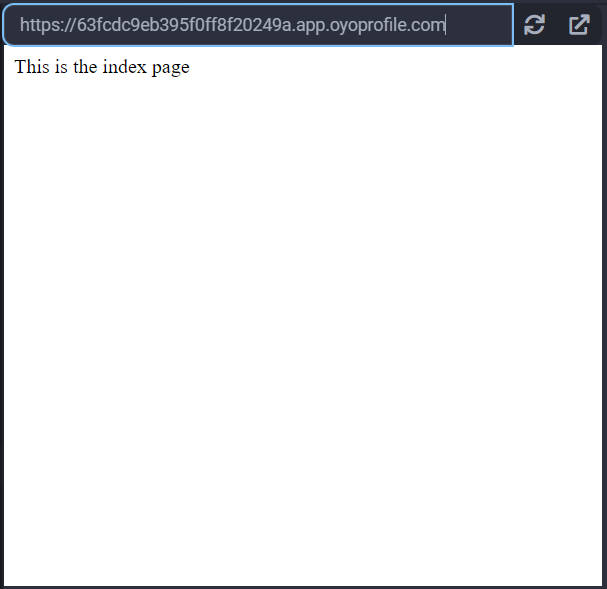
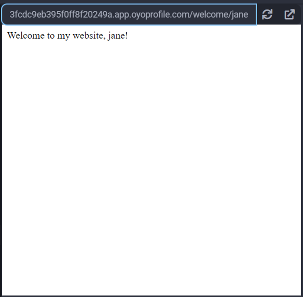

Flask
Flask is a micro web framwork. Flask is similar to Bottle, but it has more functionality out of the box and scales easier. flask is better suited for larger projects that can span across mulitple Python files.
Example
Basic Web Server with Templates
1. Flask will look for template files in the templates directory by default, so first, create a new folder named templates, then add a file named welcome.html:
<!DOCTYPE html>
<html>
<head>
</head>
<body>
Welcome to my website, {{name}}!
</body>
</html>
2. Copy and paste the below code to main.py:
from flask import Flask
app = Flask(__name__)
if __name__ == '__main__':
# host must be 0.0.0.0 to work in the Python3 Editor
import example_routes
app.run(host='0.0.0.0', port=8080)
3. Create a 2nd python file named example_routes.py:
from flask import render_template
from __main__ import app
@app.route('/')
def index():
return 'This is the index page'
@app.route('/welcome/<name>')
def welcome(name):
return render_template(
'welcome.html',
name=name
)
When you visit "/", you will see a page like this: 
And when you visit "/welcome/jane", you will see a page like this: 
Reference
- Flask at flask.palletsprojects.com